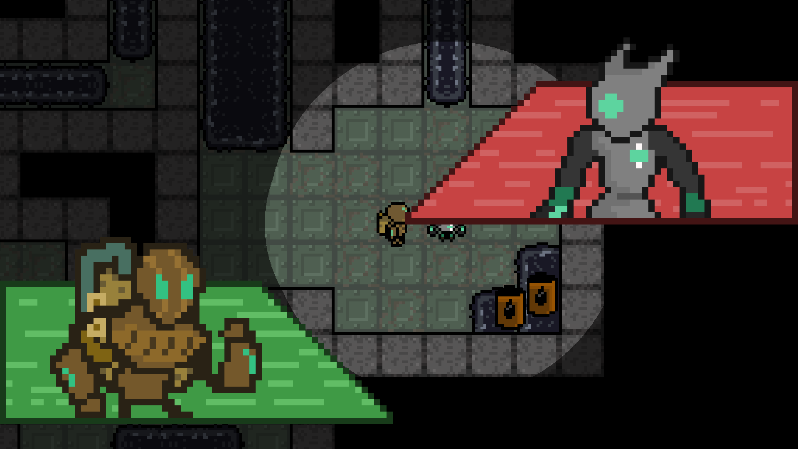

Rusted Vengeance
Rusted Vengeance was the first game that I worked on at Illinois State University for the Game Development club. Over the period of a semester, we created a steampunk RPG with fighting game elements that focuses on a robot taking down corruption. We met for several hours each week and all worked on the things related to our roles in the club and eventually created a game out of it. This is the first fully developed game that I worked in a team with. I wrote almost all of the sidequests present in the game and I am quite proud of it. Play it here: Rusted Vengeance